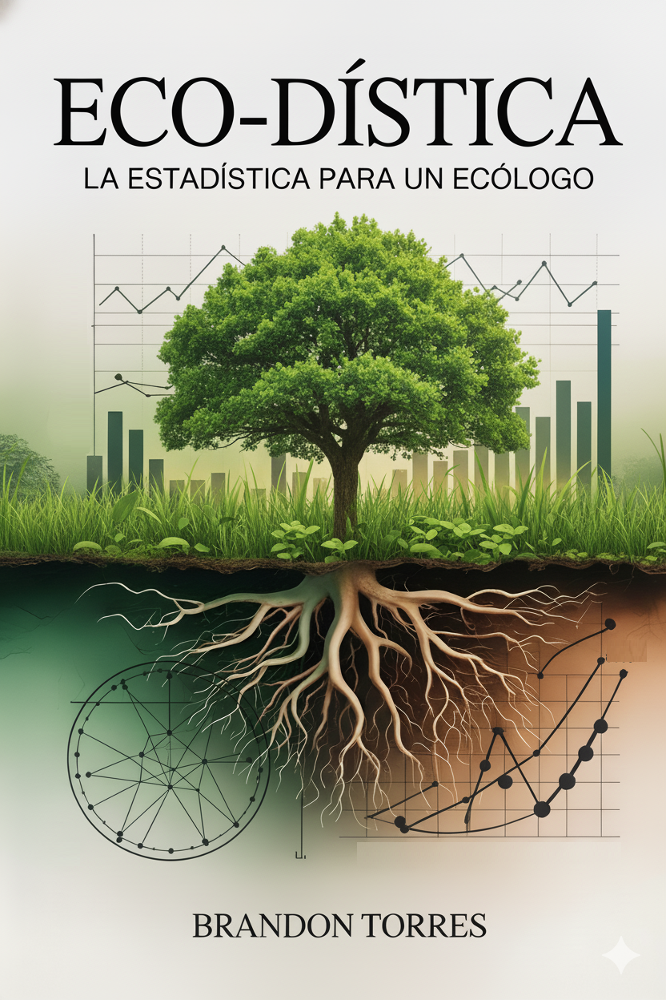
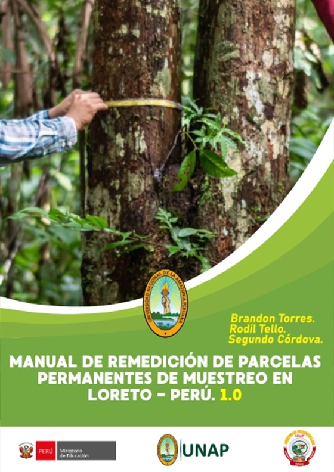
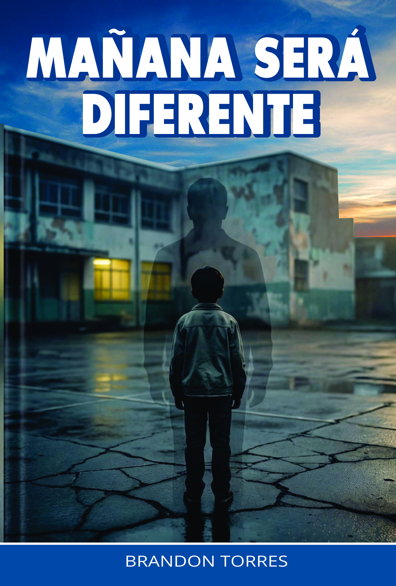

Brandon Torres
Ecólogo Tropical • Investigador • Docente • Escritor
Ecólogo Tropical • Investigador • Docente • Escritor
Ingeniero en Ecología de Bosques Tropicales, Magíster en Gestión Ambiental y doctorando en Ambiente y Desarrollo Sostenible. Docente e investigador de la Facultad de Ciencias Forestales en la Universidad Nacional de la Amazonía Peruana.

Estadística aplicada a la ecología actualmente en proceso editorial.
Próximamente en Amazon
Procedimientos técnicos para parcelas permanentes de muestreo en proceso de obtención de ISBN.
Próximamente en Amazon
Novela de venganza psicológica actualmente en proceso editorial.
Próximamente en AmazonEstudio de ecosistemas amazónicos inundables y no inundables.
Diseño de estrategias sostenibles para conservación de recursos.
Análisis cuantitativo para investigación ecológica avanzada.
Formación académica en biología, ecología forestal y estadística.
Los bosques inundables cumplen funciones esenciales en la regulación hídrica, conservación de biodiversidad y captura de carbono en la Amazonía peruana.
El análisis estadístico adecuado fortalece la validez científica en estudios de ecología tropical y monitoreo ambiental.
Orientación metodológica para tesis de pregrado, maestría y doctorado.


Procesamiento estadístico de datos ecológicos.


Corrección y estructuración científica.

Diseños experimentales sólidos.


Email: jtorres@unapiquitos.edu.pe
Institución: Universidad Nacional de la Amazonía Peruana
Facultad: Ciencias Forestales
Departamento: Ecología y Conservación